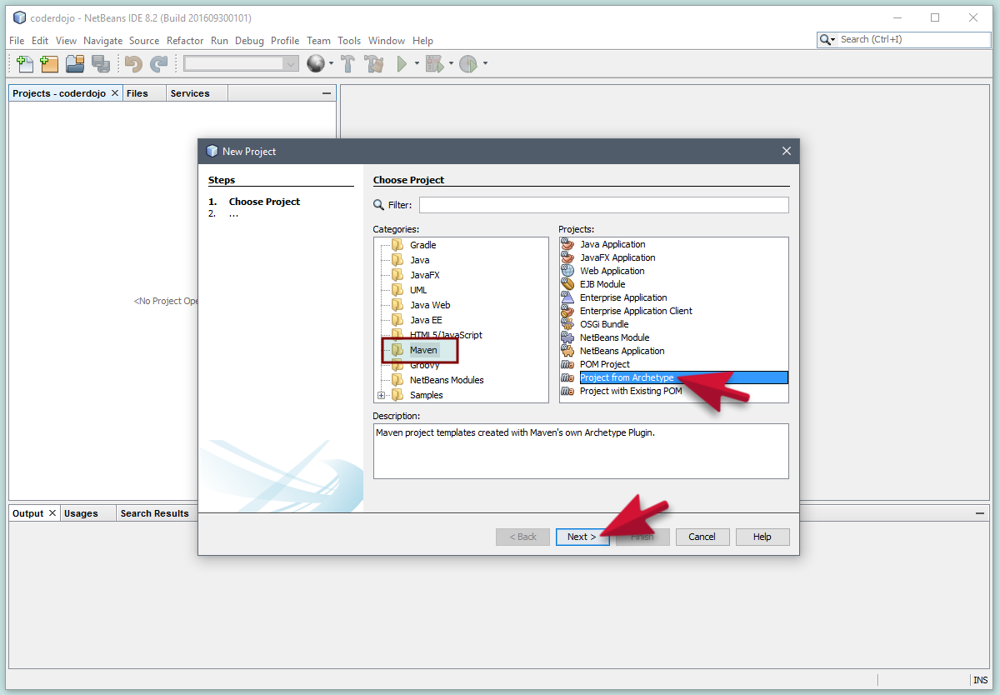
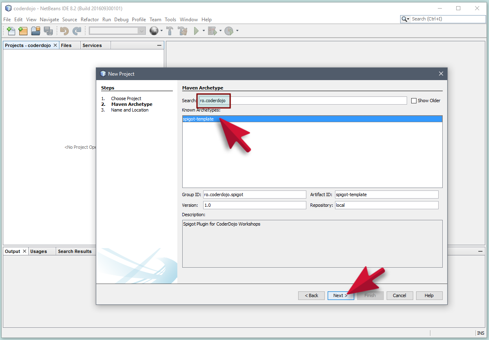
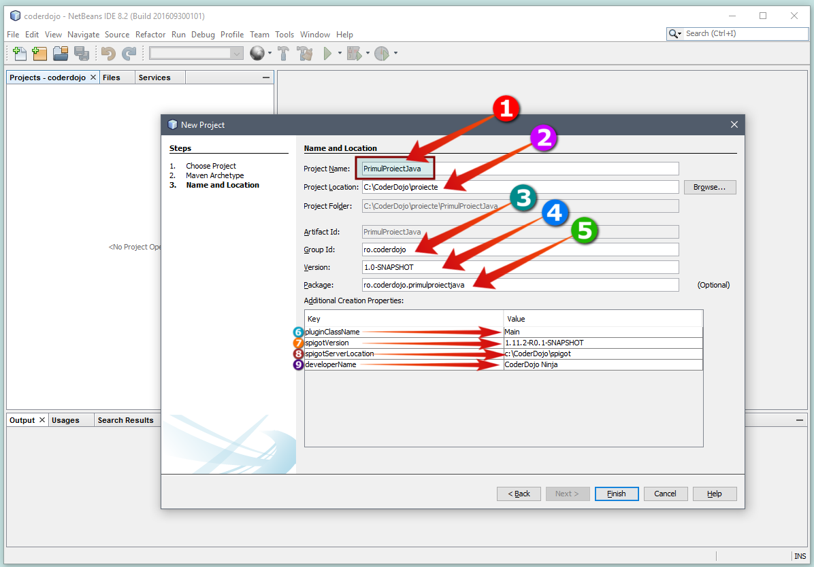

Cuprins
1 Crearea unui proiect pe bază de template
Un proiect conține toate fișierele necesare creări unui plugin Spgot de Minecraft (configurări, clase java etc.) Pentru a nu crea această structură de la zero, ne putem folosi de un template pe care l-a făcut special pentru atelierele CoderDojo.
Să începem:
1.1 ProiectN Nou
- După ce deschidem NetBeans, din meniul
File, alegem opțiuneaNew Project:
{kind=link}
1.2 Alegem Template-ul Maven
- Pe ecran o să apară un wizzard din care alegem
MavenșiProject from Archetype- Maven este un tip de proiect pe care îl vom folosi (există mai multe standarde de a defini proiecte java).
- Archetype reprezintă un template pe baza căruia se va crea un proiect.
- 
- Apăsăm
Nextpentru a trece la pasul următor al wizzard-ului.
{kind=link}
1.3 Alegem ro.coderdojo.spigot-template
- Există foarte multe astfel de proiecte (archetype) făcute publice de diverși programatori. Trebuie să îl
identificăm pe cel făcut pentru atelierele noastre. Putem folosi căsuța de căutare
Searchși să tastămro.coderdojo.- La căutare vom găsi
spigot-template. Mai jos sunt informații despre versiunea lui, identificatorulspigot-templateși grupul din care face parte (ro.coderdojo.spigot). - 
- Apăsăm
Nextpentru a trece la pasul următor al wizzard-ului.
- La căutare vom găsi
{kind=link}
1.4 Completare infrormații despre proiect
-
La acest pas completăm câteva informații legate de noul proiect:
- 
- - numele proiectului. Trebuie să nu conțină spații. De obicei se scrie cu litere mici și cu liniuță în loc de spații dacă conține mai multe cuvinte.
- - [nu se schimbă] locația folderului de pe disc unde ținem proiectele de Spigot. Este recomandat să lăsăm locația implicită deoarece ne vom mai referi la această locație în alte tutoriale.
- - [nu se schimbă] proiectele maven se împart în categorii (grupuri) pentru a le distinge de alte proiecte. Lăsăm neschimbat.
- - [nu se schimbă] versiunea pluginului nostru - o lăsăm neschimbată.
- - [nu se schimbă] pachetul îl lăsăm neschimbat. Vom învăța mai încolo ce reprezintă pachetele în java.
 - [nu se schimbă] pluginClassName va numele clasei de java care
reprezintă punctul de plecare al plugin-ului. Poate rămâne cu denumirea de Main. Clasele de java
încep cu literă mare, nu conțin spații și sunt sub format camel
case
- [nu se schimbă] pluginClassName va numele clasei de java care
reprezintă punctul de plecare al plugin-ului. Poate rămâne cu denumirea de Main. Clasele de java
încep cu literă mare, nu conțin spații și sunt sub format camel
case- - [nu se schimbă] versiunea de spigot pe care o folosim. Este aceeași cu a Minecraft-ului. Ultima versiune poate fi găsită aici: maven repository, sau instrucțiuni aici: Spigot Maven
- - [nu se schimbă] Locația folderului unde este instalat serverul spigot
(foderul în care găsim
BuildTools.jar,server.properties,spigot.ymletc) - - Numele tăul. Va apărea ca autor al plugin-ului.
- Apăsăm butonul
Finishși Archetype-ul începe să ne construiască proietul
- La sfârșit trebuie să vedem în fereastra
Output:BUILD SUCCESS. Tot în acestă fereastră vedem folderul în care a fost creat proiectul. Proiectul este descchis automat în NetBeans și îl vedem în stânga sus în fereastraProjects:
{kind=link}
{kind=link}
{kind=link}
{kind=link}
{kind=link}
{kind=link}
{kind=link}
{kind=link}
{kind=link}
{kind=link}